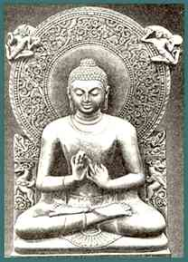
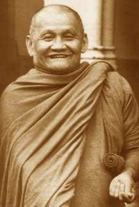

An anthology of teachings by
English-speaking disciples of Ajahn Chah
| Home Page |
SEEING THE WAY
Buddhist Reflections on the Spiritual Life


An anthology of teachings by
English-speaking disciples of Ajahn Chah
|
Hard to elude is the reach of Death; Hard to pass beyond. But they who accord with the Dhamma well taught, they will pass beyond
|
|

|
|
In 1977, when this much-loved Thai Theravada meditation master visited the United Kingdom, he brought with him two of his senior Western-born disciples. Shortly afterwards, on invitation, two more joined them. These four monks remained in London whilst their teacher returned to the East. In 1981 two other Westerners were invited to go from their mother monastery in North-East Thailand to take up residence in Perth, Australia. This book represents the teachings of a now international community -- the first generation of monks and nuns proceeding from this Theravada 'Forest Tradition'. The book begins with an introduction and dedication to Ajahn Chah and follows on with two sessions of instruction given to Western students. The remainder is a collection of transcribed talks, letters, and essays by 20 teaching monks of this tradition. Some have remained as abbots of monasteries in Thailand; others are now living in England, Switzerland, Australia and New Zealand. In keeping with the Buddha's own Teachings, these reflections on Dhamma -- the Truth of the Way Things Are -- are not intended to be accepted too readily. Neither are they to be rejected. Rather, they are offered for consideration. They are also offered as an on-going expression of gratitude for what has been received -- the living example of the Way of Truth itself. For these monks it has been the opportunity to witness the life of a great Master, who awakened the 'heart of true faith' in so many. It is sincerely wished that these teachings bring to fruition true happiness, true 'Refuge', and true peace in the hearts of those who look into them. |
[Top]
Source: Buddha Mind, http://www.buddhamind.info
| Home Page |
Vietnamese translation: "Họ đã nghĩ như thế" |